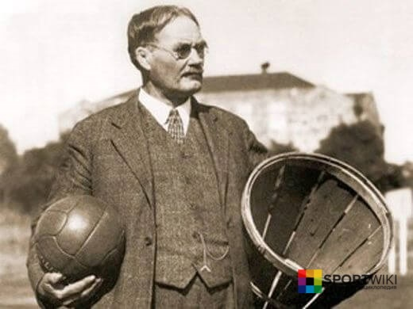
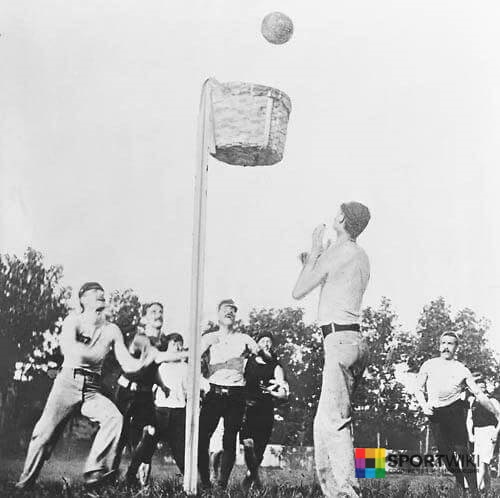
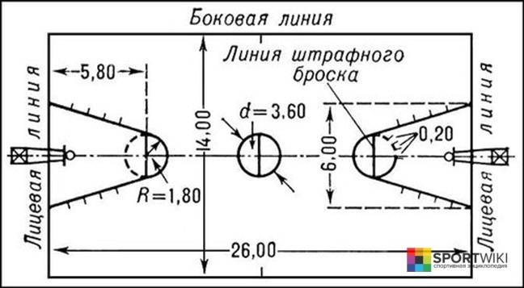
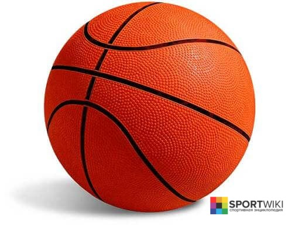

Баскетбол
История возникновения баскетбола Правила баскетбола (кратко) Баскетбольное поле Баскетбольный мяч Размеры баскетбольного кольца и щита Судейство в баскетболеБаскетбол (от англ. basket — корзина, ball — мяч) – олимпийский вид спорта, спортивная командная игра с мячом, цель в которой – забросить мяч в корзину соперника большее число раз, чем это сделает команда соперника в установленное время. Каждая команда состоит из 5 полевых игроков. Источник: http://ru.sport-wiki.org/vidy-sporta/basketbol/
История возникновения и развития баскетбола
В 1891 году в Соединенных Штатах Америки молодой преподаватель, уроженец Канады, доктор Джеймс Нейсмит, пытаясь “оживить” уроки по гимнастики, прикрепил две корзины из-под фруктов к перилам балкона и предложил забрасывать туда футбольные мячи. Получившаяся игра лишь отдаленно напоминала современный баскетбол. Ни о каком ведении даже речи не шло, игроки перекидывали мяч друг другу и затем пытались закинуть его в корзину. Побеждала команда, забросившая большее количество мячей.

Через год Нейсмит разработал первые правила игры в баскетбол. Первые же матчи по этим правилам вызвали и первые их изменения.

Постепенно баскетбол из США проник сначала на Восток – Японию, Китай, Филиппины, а потом в Европу и Южную Америку. Через 10 лет на Олимпийских играх в Сент-Луисе американцы организовали показательный тур между командами нескольких городов. В 1946 году возникла Баскетбольная ассоциация Америки (БAA). Первый матч под её эгидой состоялся 1 ноября того же года в Торонто между командами Toronto Huskies и New York Knickerbockers. В 1949 году, ассоциация объединилась с Национальной баскетбольной лигой США, в результате чего была образована Национальная баскетбольная ассоциация (NBA). В 1967 году, была создана Американская баскетбольная ассоциация, которая долгое время пыталась составить конкуренцию NBA, но спустя 9 лет объединилась с ней. На сегодняшний день NBA является одной из наиболее влиятельных и известных профессиональных баскетбольных лиг в мире. В 1932 году основана Международная федерация любительского баскетбола. В состав федерации вошли 8 стран: Аргентина, Греция, Италия, Латвия, Португалия, Румыния. Швеция, Чехословакия. Исходя из названия, предполагалось, что организация будет возглавлять только любительский баскетбол, однако, в 1989 году, профессиональные баскетболисты получили допуск к международным соревнованиям, и слово «любительский» было изъято из наименования. Самый первый международный матч состоялся в 1904 году, а в 1936 году баскетбол попал в программу летних Олимпийских игр.
Правила баскетбола (кратко)
Правила игры в баскетбол неоднократно менялись вплоть до 2004 года, когда оформился окончательный вариант правил, который считается актуальным до сегодняшнего дня.
- В баскетбол играют две команды. Обычно команда состоит из 12 человек, 5 из которых являются полевыми, а остальные считаются игроками на замену.
- Ведение мяча в баскетболе. Спортсмены, владеющие мячом, должны передвигаться по полю, ударяя им в пол. В противном случае будет засчитан «пронос мяча», а это нарушение правил в баскетболе. Случайное прикосновение к мячу отличной от руки частью тела не считается нарушением, в отличие от целенаправленной игры ногой или кулаком.
- Баскетбольный матч состоит из 4 периодов или таймов, но время каждого тайма (время игры) разнится в зависимости от баскетбольной ассоциации. Так, например, в NBA матч состоит из 4 таймов по 12 минут, а в FIBA каждый такой тайм длится 10 минут.
- Между периодами предусмотрены короткие перерывы, а между вторым и третьим периодом время перерыва увеличено.
- Заброшенный в корзину мяч может приносить разное количество очков своей команде. Если мяч заброшен во время штрафного броска, то команда зарабатывает 1 очко. Если мяч заброшен со средней или близкой дистанции (ближе 3-х очковой линии), то команде дается 2 очка. Три очка зарабатывает команда, если мяч заброшен из-за трехочковой линии.
- Если в основное время обе команды набрали одинаковое число очков, то назначается 5 минутный овертайм, если и он закончился в ничью, то назначается следующий и так до тех пор, пока не будет определен победитель.
- Правило 3 секунд – правило, которое запрещает любому игроку атакующей команды находиться в зоне штрафного броска более трех секунд.
- Правило двух шагов в баскетболе. Игроку разрешается сделать только два шага с мячом, после чего он должен либо произвести бросок, либо отдать пас.
Баскетбольное поле
Игровое поле для баскетбола имеет прямоугольную форму и твердое покрытие. Покрытие площадки не должно иметь никаких изгибов, трещин или любых других деформаций. Размер площадки для баскетбола должен составлять 28 метров в длину и 15 метров в ширину (стандарт). Высота потолка должна быть не меньше 7 метров, а на профессиональных площадках потолки поднимают на высоту 12 метров и выше. Свет на поле должен быть сделан так, чтобы не мешать передвижению игроков и должен равномерно охватывать всю площадку. До конца 60-х годов турниры можно было организовывать под открытым небом. Однако сейчас баскетбольные матчи проводятся только на закрытых площадках.

- Разметка площадки
- Ограничивающие линии. Проходят по всему периметру площадки (2 короткие лицевые линии и 2 длинные боковые).
- Центральная линия. Проводится от одной боковой линии к другой и при этом она параллельна к лицевым линиям.
- Центральная зона представляет собой круг (радиус 1,80 м) и расположена ровно в центре баскетбольного поля.
- Трехочковые линии представляют собой полукруги радиусом 6,75 м, проведённые до пересечения с параллельными (лицевыми) линиями.
- Линии штрафного броска. Линия штрафного броска наносится длиной 3,60 м параллельно каждой лицевой линии так, чтобы её дальний край располагался на расстоянии 5,80 метров от внутреннего края лицевой линии, а её середина находилась на воображаемой линии, соединяющей середины обеих лицевых линий.
Баскетбольный мяч
Баскетбольный мяч имеет сферическую форму, выкрашен в утвержденный оттенок оранжевого цвета и имеет рисунок в виде восьми вставок и черных швов.

Размеры баскетбольного кольца и щита
Высота баскетбольного кольца от уровня пола составляет 3,05 метра (стандарт). Диаметр кольца для баскетбола колеблется от 45 см до 45,7 см. Само кольцо должно быть выкрашено в ярко оранжевый цвет. К кольцу крепится специальная сетка диной 40-45 см. Баскетбольное кольцо расположено на расстоянии 15 см от щита. Щит, к которому крепится кольцо, также имеет ряд важных параметров. Размер баскетбольного щита: ширина – 1,8 м, высота – 1,05 м. Современные баскетбольные щиты изготавливаются из закаленного стекла.
Судейство в баскетболе
На баскетбольном матче присутствуют:
Ссылка на макет
- старший судья и судья
- секундометрист
- секретарь
- помощник секретаря
- оператор 30-ти секунд